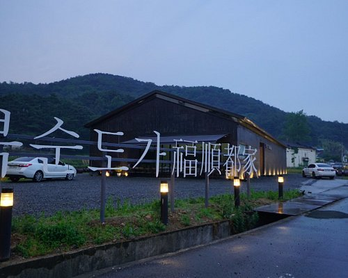

울산 소개
울산간단소개
동경 129˚15´~129˚27´, 북위 35˚27´~35˚36´에 있다. 동쪽은 동해에 면하며, 서쪽은 경북 청도군과 밀양시·양산시, 남쪽은 부산 기장군, 북쪽은 경북 경주시와 접한다. 한국에서 가장 대표적인 공업도시다. 행정구역은 1군 4구 4읍 8면 44개 동으로 이루어져 있다.
울산인구
울산광역시 전체 111만 3,458명 남구가 인구가 가장많으며 31.1만명이고, 울주군 22.2만명, 북구21.8만명, 중구21만명, 동구15만명이다.
울산의역사
선사시대 울산은 구석기시대부터 사람이 살았던 지역이다. KTX 울산역을 건설하면서 조사된 울산광역시 울주군 언양읍 신화리 유적에서 상당히 많은 양의 후기 구석기 유물이 발견되었다. 울산은 산과 바다, 평야와 강이 적절히 어우러진 까닭에 신석기시대부터 본격적인 정착 생활이 이루어졌다. 신석기시대 울산 사람들은 남구 황성동을 비롯하여 여러 곳에 주거 활동을 한 흔적을 남겨 놓았다. 울주 대곡리 반구대 암각화(蔚州大谷里盤龜臺巖刻畫)와 울주 천전리 각석(蔚州川前里刻石)은 한국의 종교와 예술이 신석기시대 울산에서 시작되었다는 사실을 짐작게 하는 문화유산이다. 청동기시대 울산에서는 태화강과 그 지류의 하안 대지를 중심으로 농경을 포함한 생업 활동이 매우 활발했다. 울산광역시 울주군 웅촌면의 검단리에서는 마을을 형성하는 집자리 터를 넓게 두르고 있는 환호가 최초로 발견되었다. 남구 무거동에서는 최초로 청동기시대 전기의 논 유적이 집자리 터와 함께 발견되었다. 동천강 주변에 위치한 북구 연암동에서는 각각의 집자리 터를 울타리처럼 두르고 있는 둥근 구덩이 흔적[외곽 주구]이 최초로 발견되어 ‘연암동식 주거지’라는 고유한 이름을 얻게 되었다. 한국의 지방 행정 단위 가운데 청동기시대 유적의 밀집도는 울산이 가장 높다. 이는 청동기시대 울산이 한국에서 가장 살기 좋은 곳이었음을 뜻한다. 고대 삼한시대 진한 12소국 지역에 속했던 울산에는 우시산국을 비롯한 소국들이 있었다. 울주 하대 유적과 출토 유물을 통해 울산광역시 울주군 웅촌 일대에 우시산국이 있었음을 확인할 수 있다. 우시산국은 청동 솥[청동 정(靑銅鼎)]과 오리형 토기, 많은 양의 철제 유물을 소유할 정도로 강력한 소국이었다. 『삼국사기(三國史記)』 기록에 등장하는 굴아화촌은 신라에 편입되기 이전 울산에 있었던 소국으로 추정된다. 중구 다운동 고분군과 그 출토 유물은 신라에 편입되기 이전 중구 다운동 일대에 독립적인 강력한 정치 집단이 있었음을 보여준다. 이처럼 울산에는 우시산국을 비롯한 소국과 독립 읍락들이 있었다. 그러나 울산의 소국과 읍락들은 1세기 이후 경주 사로국의 영향 아래 들어갔고, 3세기 이후에는 신라의 행정 단위로 편제되었다. 천년왕국 신라시대에 울산은 서라벌[현 경주]의 외항으로 기능하며 새로운 해외 문물과 가장 먼저 만나는 곳이 되었다. 불교신앙과 국제문화는 울산을 거쳐 서라벌로 전해졌다. 처용설화는 바다를 통해 들어온 역병의 퇴치와 관련하여 성립된 것으로 울산이 국제 교류의 거점이었음을 확인시켜준다. 중구 반구동 유적은 울산이 신라의 국제무역항이었다는 사실을 입증하는 유적으로 평가된다. 고려시대 통일신라 말기 호족 박윤웅(朴允雄)의 시대에 울산은 번성한 곳이었으나 고려 말 중앙 정부의 지배력이 약해지자 왜구의 침략에 시달리며 쇠퇴하였다. 울산은 물산이 풍부하고 대외 교통도 용이한 곳이었으므로 평화 시에는 교역이 활발한 곳이었으나 그렇지 않을 때는 약탈의 대상이 되었던 것이다. 무신정권 시기 효심이 중심이 된 농민항쟁이 벌어지기도 하였다. 고려 말 왜구의 침략이 잦자, 고려 정부는 울산에 읍성을 쌓아 왜구의 침략에 대비하였다. 조선시대 조선시대에 울산은 일본과의 교역이 허락된 해안 도시 가운데 하나였다. 세종 때에는 염포(鹽浦)를 개항하였다. 일본인들이 태화강 하구에 위치한 염포에 들어와 왜관을 설치하고 생활하기도 하였다. 울산은 일본과 가까운 거리에 있어서, 군사적 방어가 중시되어 경상좌도병마절도사영[병영]이 상시적으로 설치된 지역이기도 했다. 세조 때에는 경상좌도수군절도사영[수영]이 일시적으로 설치되기도 하였다. 고려 말 이후부터 조선 전기에 걸쳐 울산에서 여러 차례 성을 새로 쌓는 작업이 진행된 것도 울산 지역이 군사 방어의 요충지로 인식되었기 때문이다. 조선시대 울산은 무예를 숭상하는 기풍이 강한 곳이어서 무향(武鄕)으로 불리기도 했다. 1592년(선조 25) 임진왜란이 일어나자 울산의 지역민들이 적극적으로 의병운동에 참여한 것도 이런 사회적 기풍과 관련이 깊다. 전쟁이 끝난 뒤 국가에서는 울산 의병을 높이 평가하여 울산을 도호부로 승격시켰다. 근현대 신라불국토설이 울산에서 싹텄듯이 19세기 후반 동학운동의 씨앗이 마련된 곳도 울산이다. 동학의 창시자 최제우는 울산에서 유·불·선 삼교 융합의 동학교리를 다듬었다. 일제강점기 울산 출신의 송석하는 근대 민속학을 개척했고, 한글학자 최현배(崔鉉培)는 울산에서 한글운동을 시작했다. 1919년 3·1운동 당시 울산 지역민들도 적극적으로 참여하였다. 울산광역시 울주군 온양읍 남창 일대와 언양읍 일대, 중구 병영동 일대에서 만세운동이 벌어졌다. 조선 후기 울산은 조선 제염업의 중심지 가운데 하나였다. 한반도 전역에 미쳤던 울산 소금의 명성은 일제강점기까지 계속되었다. 미역을 비롯한 해산물이 풍부하여 울산 해안이 제주 해녀의 새로운 정착지로 부상한 것도 조선 후기부터이다. 구한말 울산은 러시아와 일본이 근대 포경업의 전진 기지로 삼으려고 경쟁을 벌인 곳이기도 하다. 울산 장생포를 중심으로 한 포경 활동은 포경이 금지되는1980년대 중반까지 계속되었다. 1945년 광복과 1950년 6·25전쟁, 1960년 4·19혁명과 1961년 5·16군사 쿠데타를 거친 뒤, 1962년 울산은 국가의 임해공업지구로 선정되어 개발되는 동시에 시로 승격되었다. 1960년대 중반 이후 울산은 자동차, 선박, 석유화학 산업 등 한국 산업화 및 노동운동, 환경운동의 중심으로 부상하였다. 한국 산업화의 메카로 불렸던 울산은 1997년 광역시로 승격되었으며, 2000년 이후 산업도시에 녹색환경 및 역사문화관광도시라는 성격을 더하고 있다. [네이버 지식백과] 울산의 역사 [歷史] (한국향토문화전자대전)
울산 영상
울산출신유명인
울산관광명소 TOP11
넓이는 약 93만m²이다. 1906년에 설치된 울기등대가 있어 1962년 5월 14일부터 울기공원이라고 불리다가,
2004년 2월 24일 대왕암공원으로 명칭을 변경하였다. 공원에는 신라시대 문무대왕의 왕비가 죽어서도
호국룡이 되어 나라를 지키겠다 하여 바위섬 아래에 묻혔다는 전설이 서린 대왕암이 있다.
대왕암은 용추암 또는 댕바위라고도 불리며 육지에 있는 바위와 철교로 연결된다. 진입로부터 펼쳐진 해송림과 고려턱뼈 조형물로 유명하며,
바닷가에는 대왕암 외에도 남근바위·탕건바위·자살바위·처녀봉·용굴 등 기암들이 있다.

태화강 십리대밭은 태화강을 따라 폭 30 미터, 길이 4킬로미터 규모로 자리 잡은 대나무 숲이다.
일제 강점기 시절, 큰 홍수로 농경지가 백사장으로 변했을 때, 한 일본인이 그 땅을 사서 대밭을 만들었다.
그 뒤 대나무로 만든 제품이 잘 팔리자 주민들이 계속해서 강변에 대나무를 심어서 지금의 십리대밭이 만들어졌다.

울산대공원은 넓은 부지와 도시내부에 위치하여 시민들이 이용하기 편리하며, 풍부한 산업환경과 울산의 문화를 그대로 느낄 수 있도록 설계되었다.
울산대공원은 남녀노소 다양한 계층을 위한 체험의 장이자 문화와 휴식의 공간이며, 공원의 효율적인 관리를 통하여 생동감 넘치는 다양한 공원 프로그램을 진행함으로써
주민들에게 부담없이 지속적으로 방문할 수 있는 공간이자 자연생태에 관한 교육 및 체험공간이 되고자 한다.
동해안에서 맨 먼저 떠오르는 해를 볼 수 있는 곳으로 알려져 있다. 영일만의 호미곶보다 1분 빠르게, 강릉의 정동진보다도 5분 빨리 해돋이가 시작된다.
주위에 있는 울산 지역의 진하해수욕장, 서생포 왜성과 함께 새로운 명소로 인기를 얻고 있어 관광객들이 많이 찾는다.
간절곶등대는 바다를 바라보고 우뚝 서 있으며 흰색이다. 등대 앞은 솔 숲인데, 울창하지는 않지만 꼬불꼬불한 모양이 정겹다.

복순도가(福順都家)는 김정식·박복순 부부가 집안에서 전통적으로 내려오는 방식으로 빚은 가양주(家釀酒) 형식의 전통주를 상표화한 것이다.
상표는 박복순의 이름 ‘복순’에 도시 ‘도(都)’ 자와 집 ‘가(家)’ 자를 합쳐 만들었다. 막걸리를 직접 만드는 박복순의 이름을 사용하여
할머니와 어머니의 곱고 정성스러운 손길이 담긴 손막걸리의 이미지를 강조하였고, 그릇 도(陶) 자가 아닌 도시 도 자를 사용하여
전통주라는 술의 의미를 넘어서 지역 문화 자원 기반의 콘텐츠 교류 활성화를 이루기 위한 문화 촉매제 역할을 부여하고자 지은 이름이다.

태화강은 울산의 중심을 가르며 흐르는 강으로, 화룡연을 굽이 돌아 학성을 지나면서 이 수삼산의 이름을 남기고 울산만에서 동해로 들어간다.
동서로 약 36㎢, 남북 28㎢ 의 유역은 그 대부분이 산악지대를 형성하나 강의 양쪽과 하류에는 기름진 평야가 펼쳐져 있으며,
오늘날에는 울산시민의 중요한 식수원이 되어주고 있다. 태화강의 심장부에 위치했던 태화들은 장기간동안 무관심으로 방치되어 있다가
태화강 국가정원 조성으로 다시 자연의 모습을 갖추고 시민들의 품으로 돌아왔다.1996년 공업용수로도 사용 불가능했던 태화강의 수질을
울산시와 시민, 환경단체, 기업의 참여와 노력으로 2007년 이후 수질환경기준 '매우 좋음'수준까지 끌어올린 친환경 캠페인의 모범사례로도 꼽힌다.
2004년 1월 공사를 시작하여 2005년 5월 31일 문을 열었다. 1986년 포경(捕鮑)이 금지된 이래 사라져 가는 포경 유물을 수집·보존·전시하고,
고래와 관련된 각종 정보와 해양생태계는 물론, 교육 연구를 위한 체험 공간을 제공할 목적으로 건립하였다.
전시관은 지상 4층으로 이루어져 있다. 1층에는 기획전시실과 자료열람실이 있다.
2층 고래탐험실, 어린이체험실에는 고래의 생태와 진화, 고래 회유도, 고래의 생태적 특징, 고래 뱃속 모형, 고래의 종류와 반구대 암각화 관련 영상물,
고래 두골 코너 등 고래에 대한 상식을 쉽고 재미있게 꾸며 놓았다. 3층에는 고래연구실과 전망대영상실로 구성되어 있으며, 4층은 전망대이다.
그밖에 부대시설로 야외광장 포경선, 기념품 판매소 등이 있다.
방어진 북쪽 1km 떨어진 곳에 길이 850m, 폭 36~61m, 면적 42,500㎡의 일산해수욕장이 있는데 질 좋은 모래가 깔려있고
매년 7, 8월 수온은 21.2도, 수심 1~2m의 완만한 경사를 이루고 있는 곳으로, 매년 7월 말에 해변축제를 개최해 오고 있다.
주변에는 유원지개발이 한창으로 모텔과 휴게시설들이 많아 충분히 머물다 갈 수 있는 곳으로 각광받고 있다.
해수욕장 주변에는 대왕암공원과 현대중공업이 있다. 또한, 인근에 있는 화암추항로표지 관리소는 우리나라 등대 전망대 중 가장 높은 곳으로
등대전시관 및 전망대에서 울산항을 한 눈에 바라볼 수 있는 재미를 느낄 수 있다.
선사시대에서 현대에 이르기까지 울산의 역사를 아우르는 종합적인 도시역사박물관을 표방하며 2011년 6월 22일 개관하였다.
건물은 지하 1층, 지상 2층으로, 건물 총면적 14,409㎡, 부지면적 33,058㎡의 규모이며, 울산의 역사와 근현대 산업 발달을 형상화하고
박물관이 위치한 울산대공원의 생태계 흐름이 원활히 이어지도록 디자인되었다.
산하에 울산암각화박물관, 울산대곡박물관을 두고 있으며, 2만 점 이상의 고고, 민속, 역사 유물을 소장하고 있다.
슬도는 방어진항으로 들어오는 거센 파도를 막아주는 바위섬으로 ‘갯바람과 파도가 바위에 부딪칠 때 거문고 소리가 난다’하여 붙여진 이름이다.
아치형의 슬도교를 건너가면 랜드마크처럼 서 있는 슬도등대를 만날 수 있는데,
등대 난간 위 계단 위에 올라가서 보는 시원한 바다 풍경이 아름답다.

울산대교 전망대는 높이 63M(해발203M)로 화정산 정상에 위치해 있다. 전망대에 올라서면 2015년 5월 개통한
국내 최장이자 동양에서 3번째로 긴 단경간 현수교인 울산대교와 울산의 3대 산업인 석유화학, 자동차, 조선산업 단지 및 울산 7대 명산을 조망할 수 있다.
주간에 바라보는 울산의 전경과, 야간에 바라보는 공단과 도심의 야경은 색다른 즐거움을 제공한다.
전망대에는 동구 관광기념품 기프트샵과 카페 등을 운영하고 있어 볼거리·머물거리 모두 제공하고 있다.